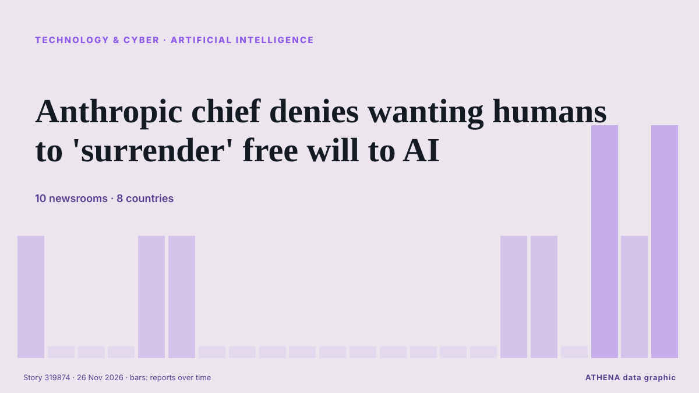

Τεχνητή νοημοσύνη
ΧορηγούμενοΠαρουσιάζεται από  Cybernetics and Artificial Intelligence Lab Welcome to the Cybernetics and Artificial Intelligence Laboratory, established at the Department of Business Administration of the National and Kapodistrian University of Athens. The lab is headed by Professor Dimitrios Thomakos. The lab aims to do research that can be published in top venues. Our research uses tools and methods of Artificial Intelligence, and lies in the following areas: - Forecasting - Decision making - Cyber security - Finance We are always looking forward to collaborating with exceptional students!
Cybernetics and Artificial Intelligence Lab Welcome to the Cybernetics and Artificial Intelligence Laboratory, established at the Department of Business Administration of the National and Kapodistrian University of Athens. The lab is headed by Professor Dimitrios Thomakos. The lab aims to do research that can be published in top venues. Our research uses tools and methods of Artificial Intelligence, and lies in the following areas: - Forecasting - Decision making - Cyber security - Finance We are always looking forward to collaborating with exceptional students!
| 13 Νοε | 0 |
|---|---|
| 14 Νοε | 0 |
| 15 Νοε | 0 |
| 16 Νοε | 0 |
| 17 Νοε | 0 |
| 18 Νοε | 0 |
| 19 Νοε | 0 |
| 20 Νοε | 2 |
| 21 Νοε | 0 |
| 22 Νοε | 2 |
| 23 Νοε | 9 |
| 24 Νοε | 4 |
| 25 Νοε | 6 |
| 26 Νοε | 0 |
Οι τίτλοι των ειδήσεων παρουσιάζονται στα αγγλικά, όπως δημοσιεύτηκαν.

Anthropic chief denies wanting humans to 'surrender' free will to AI
Anthropic chief executive Dario Amodei on Wednesday denied wanting humanity to give up its free will to AI, calling it “absurd” to attribute the idea to him as rival tech leaders push back. από Dawn
AI consumes less water per dollar spent than almond milk or golf: Report
The report puts US$25 (S$32) a month of AI spending at about 1.9 gallons of water consumption. από The Straits Times
Etsy Rewrites AI Training Terms After Sellers Close Shops
Etsy sellers upload photos, artwork and descriptions so shoppers can find and buy what they make. από PYMNTS
NIO targets 10,000 battery swap stations and $52B in batteries by 2030
NIO says its energy arm, NIO Power, will operate more than 10,000 battery swap stations and manage over RMB 350 billion ($52 billion) worth of battery packs by 2030. από Electrek
Retailers Face Rising AI Cyberattack Threat Ahead of Black Friday, Many Uninsured
Experts warn that a cyber incident can quickly become a major financial loss. από The Straits Times
The Saudi engineer accused of bugging OpenAI is set to be released on a $1 million bond
Judge Alex Tse allows Saudi ex-OpenAI engineer Abdulrahman Alfozan to await trial at home. από Business Insider
Wells Fargo Tells Customers They Are Responsible for AI Agents
Wells Fargo is letting its customers know they are responsible for how their AI agents behave with their money. από PYMNTS
Anthropic and OpenAI staff reportedly warn unreleased models may be too powerful to release safely
Many employees at Anthropic and OpenAI no longer believe the companies' most powerful unreleased models can be released safely, Axios reported on November 24, 2026, citing more than two dozen sources… από DigiTimes Asia
Asian stocks fall as AI trade falters
ASIAN stocks retreated after a selloff in US technology shares revived doubts about the durability of the artificial intelligence trade, extending losses... από The Business Times
Generative AI Adoption Triples in Greek Firms, but Results Lag
Generative AI adoption among Greek businesses has more than tripled in a year, but only 1.7 per cent report measurable results, a survey found. από Greek City Times
Virginia, Oregon sue Musk's SpaceX over Grok AI's creation of child sexual abuse images and videos
Nov 23 - Virginia and Oregon are suing Elon Musk's SpaceX Super Intelligence Corp, alleging the company profited from a feature in its AI model Grok that produces child sexual abuse material and… από The Straits Times
Walmart Turns to Meta’s Muse to Power Black Friday
Walmart says its customers can now use Meta’s AI agent, Muse, to find Black Friday deals. από PYMNTS
Peter Gabriel – “Yes, It Will Go”
Like so many of us these days, Peter Gabriel is thinking a lot about artificial intelligence. από The National Herald
OpenAI, Cisco Unveil Open Source Tool to Shield Unpatched Linux Systems
OpenAI and Cisco’s Shirudo uses AI-generated shields to block Linux exploits while patches are prepared, but it’s not yet production-ready. από SecurityWeek
Anthropic Expands Enterprise Safeguards for Detecting AI Misuse
EFS helps zero-retention customers spot Claude misuse spread across many requests while keeping conversation data in their own cloud. από SecurityWeek
AI tools help brands curb Black Friday deals, from clothes to skincare
Often, the tools conclude that companies can reduce discounts without dampening demand,. από The Straits Times
Anthropic mathematician claims to have solved 167-year-old math problem with Claude
An anthropic mathematician claims to have solved the Riemann hypothesis using Claude. από Tom's Hardware
Anthropic’s Record IPO Raises Hopes for a Charitable Windfall That Has Nonprofits Preparing to Scale
The Claude AI tool maker has already pledged 5% of its shares, and its seven co-founders say they'll give away 80% of their equity. από KQED News (San Francisco)
Ethiopia and Rwanda Seek to Elevate Bilateral Partnership Through Practical Cooperation
Addis Ababa, November 23, 2026 (FMC) – Ethiopian Prime Minister Abiy Ahmed held talks with Rwandan Prime Minister Justin Nsengiyumva to exchange views on advancing practical collaboration and explore… από Fana Broadcasting Corporate